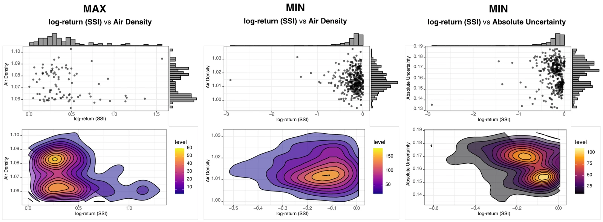
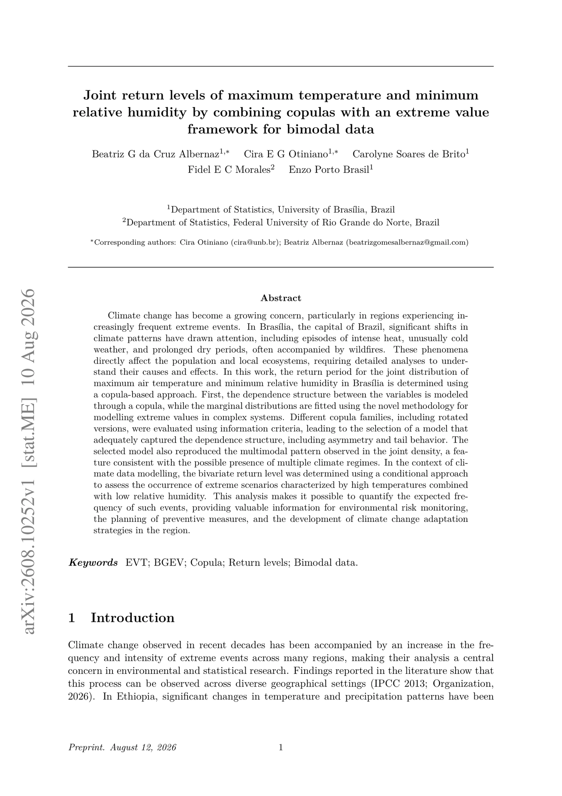
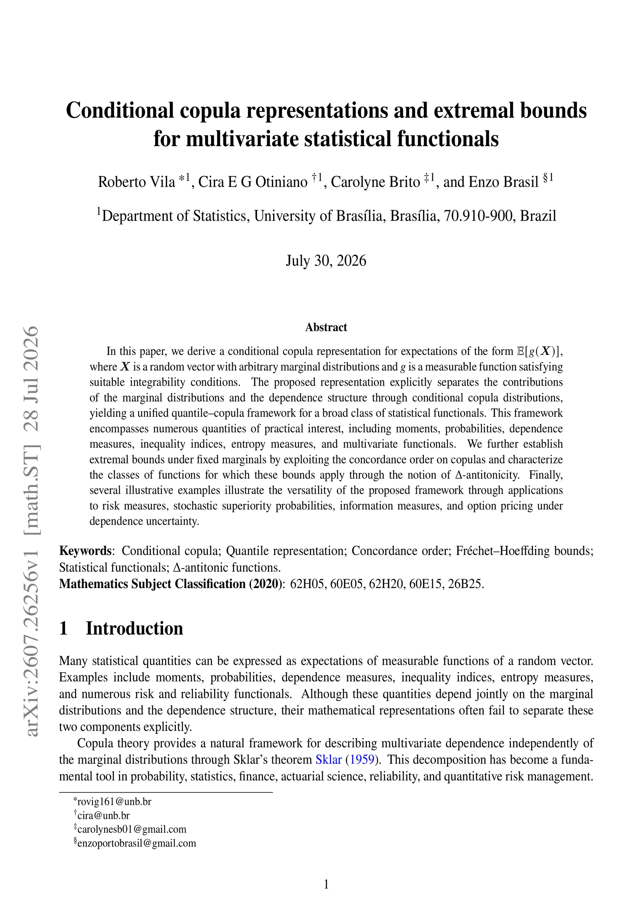

Extremes in naturestatistics, uncertainty and prediction in the face of extreme phenomena
A broader presentation of extreme phenomena, including the joint solar–atmospheric analyses.
Explore the talk →This research area studies how extreme conditions occur together and how their dependence affects inference in environmental and physical systems. It brings together work on temperature and humidity, solar irradiance and atmospheric variables, climate and financial risk, and the use of copulas to model joint behaviour.
High temperature and low humidity, or extremes in solar and atmospheric records, raise questions that cannot be answered one variable at a time. The studies gathered here examine marginal behaviour and dependence together, while retaining the particular data, assumptions and aims of each application.

A broader presentation of extreme phenomena, including the joint solar–atmospheric analyses.
Explore the talk →An EVT and copula approach to tail uncertainty, presented in Huntsville, Alabama.
Explore the talk →
GEV and BGEV margins combined with a copula to study high temperature and low relative humidity.
Read preprint ↗
A conditional copula representation for expectations of measurable functions, with extremal bounds under fixed marginals.
Read preprint ↗
An earlier conference study of the bivariate temperature–humidity distribution.
View poster ↗
A related application of bivariate copulas to climate and financial variables.
View poster ↗
Extreme-value models and copulas in the solar–atmospheric research line.
View poster ↗The common task is to understand how dependence changes the interpretation of rare events. Environmental, solar–atmospheric and climate–financial studies provide different settings for that question; their results remain specific to the variables and models examined.